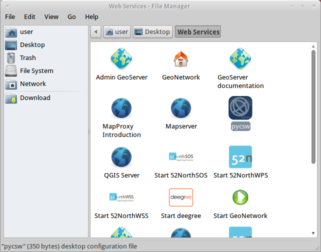

pycsw Quickstart¶
pycsw is an OGC CSW server implementation written in Python. pycsw allows for the publishing and discovery of geospatial metadata. Existing repositories of geospatial metadata can be exposed via OGC:CSW 2.0.2 or OGC:CSW 3.0.0.
Run the tester application¶
On the Desktop go to Web Services --> pycsw or open Firefox and navigate to
http://localhost/pycsw/tests/index.html:
{kind=link}
By selecting the left drop-down list, the user can see various predefined POST requests, encoded as XML, that can be sent to pycsw.
Select "apiso/DescribeRecord" and press the "Send" button. A description of the ISO Application Profile record is presented on the right panel.

Selecting "GetCapabilities-SOAP" and press the "Send" button. A SOAP request is sent to the server to advertise their web service capabilities.

You can search for data records, performing a spatial bounding box query, by selecting "GetRecords-filter-bbox" and editing the coordinates in the XML request.

You can go through all the available requests and perform various requests from this testing application.
Understand capabilities and configuration¶
The capabilities of the pycsw installation can be found at http://localhost/pycsw?service=CSW&version=2.0.2&request=GetCapabilities.
If you just use http://localhost/pycsw you will get the capabilities document for CSW 3.0.0, since that is the latest version supported.
To edit the web service metadata, included in the capabilities document, you can modify the file /etc/pycsw/default.cfg under the tag [metadata:main].
If you want to enable INSPIRE Discovery Service support, fill in the metadata under the tag [metadata:inspire] and set the enabled property to true.
For full functionality and configuration options, please consult the documentation on the pycsw website.
Create metadata¶
Metadata files for a spatial dataset or a spatial web service can be created through the open source implementation of inspire directive for metadata, European Open Source Metadata Editor (EUOSME). This application can be found at http://inspire-geoportal.ec.europa.eu/editor/. Source code is available at https://joinup.ec.europa.eu/svn/euosme/trunk
You can fill the mandatory metadata fields by going through the application tabs, adding information like the name of the data owner, keywords, resource location on the web, geographic location (using a bounding box or the name of a country), etc.

After you have added all the information available, press the validation button on top of the page to check for consistency with the INSPIRE directive.

After a successful validation, the XML file can be saved to the local disk and viewed through a text editor or a browser.
Load metadata¶
pycsw supports the following databases:
SQLite3
PostgreSQL (PostGIS optional)
MySQL
In OSGeoLive, a simple SQLite setup has been implemented. The database can be found in /usr/share/pycsw/tests/suites/cite/data/records.db
Create a new database¶
In order to create a new SQLite database we need to:
Edit
/etc/pycsw/default.cfg:[repository]
database: the full file path to the metadata database, in database URL format (see https://docs.sqlalchemy.org/en/latest/core/engines.html#database-urls)
table: the table name for metadata records (default is
records)
Setup the database:
$ sudo pycsw-admin -c setup_db -f /etc/pycsw/default.cfg
This will create the necessary tables and values for the repository.
The database created is an Simple Feature Access (SFS) compliant database, and can be used with any implementing software. For example, to use with OGR:
$ ogrinfo /path/to/records.db
INFO: Open of 'records.db'
using driver 'SQLite' successful.
1: records (Polygon)
$ ogrinfo -al /path/to/records.db
# lots of output
Import Metadata¶
$ sudo pycsw-admin -c load_records -f /etc/pycsw/default.cfg -p /path/to/records -r
This will import all *.xml records from /path/to/records into the new database and configure the repository to expose queryables as per Table 53 of OGC:CSW.
Data discovery through QGIS MetaSearch plugin¶
On the Desktop go to Desktop GIS --> QGIS to start QGIS, then click on the MetaSearch button (CSW icon)

Add the pycsw server by pressing the New button and type in
http://localhost/pycsw/

Add some default servers using the Add default servers button and also get the capabilities of the server using Server info button

Perform a search using the catalogue, either by a string value or with a bounding box

Things to try¶
Try to discover data through the Tester application by setting the appropriate requests eg. any text search with the string "imagery" leads to discovering the xml data created previously by EUOSME

Try to discover data through the Python OWSLib CSW interface.
Try to discover data from GeoNode, which is also included in OSGeoLive and uses pycsw as the default CSW engine.
What next?¶
For more information on pycsw, please consult the documentation on the pycsw website.